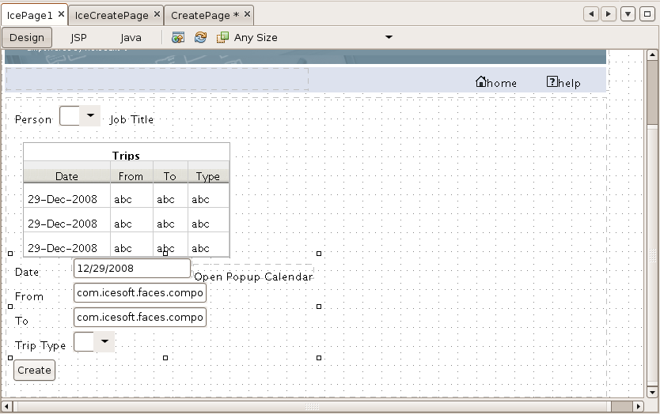

Woodstock to ICEfaces Porting Guide - Part 3
Part 3 of this guide builds on
the work completed in Part 2.
At the completion of Part 2, the ICEfaces IcePage1.jsp and IceCreatepage.jsp have replaced the
Woodstock Page1.jsp and CreatePage.jsp pages
respectively. The focus of Part 3 is to build a single page
interface to replace the existing multi page interface. The
target capabilities for this interface include:
- Master/detail view in a single page
- Eliminate update and delete buttons, and incorporate row selector
into data table for selecting trips for CRUD operations.
- Introduce panel stack of buttons for the various CRUD operations.
- Introduce multi window capabilities
During the course of this guide the following topics are
discussed:
At the completion of this guide you will understand the basic
concepts of how to build single page interfaces with ICEfaces.
The completed project for this step of the guide is
available here.
ICEfaces Extended Request Scope
Standard request scope associates page state with a single request
cycle, and is well-suited to multi-page applications where the page is
refreshed after each request. When you consider single page
interfaces based on Ajax techniques, a single page can be associated
with multiple requests. Using standard request scope requires
that the entire request scope state be reestablished with each of the
underlying Ajax requests, which could prove to be grossly
inefficient. You could consider moving state to session scope,
which is maintained across multiple requests in the session, but that
is far from an ideal solution. This is particularly evident when
you look to support multiple views onto the same web app from a single
client. These views share a common session, but each page could
potentially be in a considerably different state, making session scope
unsuitable for maintaining the page state. Basically, the
standard scoping model did not anticipate Ajax-based implementations
and becomes cumbersome for single page interfaces.
ICEfaces features an extended request scope, where the request scope
state is maintained across multiple requests associated with a single
page, overcoming the deficiencies of the standard scoping model.
The use of extended request scope is controlled through a configuration
parameter in the web.xml
file. When the ICEfaces framework is added to an existing
Woodstock project, standard request scope is turned on by default to
maintain existing behavior. In order to begin working with
extended request scope the configuration must be adjusted as follows.
<context-param>
<param-name>com.icesoft.faces.standardRequestScope</param-name>
<param-value>false</param-value>
</context-param>
All subsequent modifications to the working example are based on the
use of extended request scope, so adjust the configuration
appropriately before proceeding. As we start to introduce row
selection and master/detail views to our single page interface, we will
leverage extended request scope to maintain the necessary state.
This will position us to add multi-view capabilities later. As
part of this strategy we will eliminate dependencies on the session
scoped state.
Row Selector in Data Table
The ice:rowSelector facilitates the
selection of one or more rows from an ice:dataTable
using the mouse. A style class is used to visually distinguish
rows for mouse over and selection events. The programing model
for row selection includes the following:
- The value attribute
binding of the row selector is to an iterable data model that maintains
the boolean state of the selection status of each row in the
table. When the table is rendered, this data model will be
called for each row in the table to determine if it is selected or
not. When row selection occurs, a setter into this data model is
used to update the state. In the case of single row selection,
this involves setting the newly selected row to true, and the previously selected
row to false.
- The selectionListener
attribute is a method expression binding to the method responsible for
business logic process that occurs as a result of row selection.
In order to add the row selector to our working example, the following
steps are taken using design mode in NetBeans.
- Select the last column of the dataTable
and delete it to eliminate the Update and Delete buttons from the table.
- Right click the dataTable
and from the context menu select Add
Row Selector... This will bring up a binding dialog that
allows you to define the selection listener as illustrated below.
- If you examine the JSP code you will see the following
declaration in the first column of the dataTable.
<ice:rowSelector
id="rowSelector1"
selectionListener="#{IcePage1.rowSelector1_processAction}"/>
Modify this to add a
value binding as follows.
<ice:rowSelector id="rowSelector1"
selectionListener="#{IcePage1.rowSelector1_processAction}"
value="#{IcePage1.rowSelected}" immediate="false"/>
The value attribute binds to
our row selection data model, and immediate
is set to false because we do not want row selection to be applied to
the data model
We will now turn our attention to the IcePage1.java backing bean, which
requires the following changes.
- For row selection we introduce request-scoped state to maintain
the currently selected row.
private TreeMap
currentRowData;
public TreeMap
getCurrentRowData() {
return currentRowData;
}
public void
setCurrentRowData(TreeMap currentRowData) {
this.currentRowData = currentRowData;
}
- The row selector action listener must initialize the state of our
currently selected row.
public void
rowSelector1_processAction(RowSelectorEvent rse) {
currentRowData = (TreeMap) dataTable1SortableDataModel.getRowData();
}
- When the data table is rendered it uses the rowSelector value
binding to determine which rows are selected. If we needed to
support multiple row selection, the most natural
data model would be a hash map with trip id as the primary key, but
since we require only single row selection we can simply compare with
the currently selected row. The boolean getter for this follows.
public boolean
isRowSelected() {
if (currentRowData == null) {
return false;
}
TreeMap rowData = (TreeMap) dataTable1SortableDataModel.getRowData();
Integer currentTrip = (Integer)rowData.get("TRIP.TRIPID");
Integer selectedTrip = (Integer) currentRowData.get("TRIP.TRIPID");
return (currentTrip.equals(selectedTrip));
}
- The setter for row selection does nothing, and leaves it to the
action listener to establish a new value.
public void
setRowSelected(boolean selected) {
}
- In the value change
listener for the person drow down, invalidate currentRowData so there is no
selection after the person is changed. There is a minor
complication with the JSF lifecycle where we need to postpone
processing of the value change event from the PROCESS_VALIDATIONS phase
to the UPDATE_MODEL phase. This is necessary so the value
bindings on currentRowData can be used to populate the model prior to
nulling it out in the valu change listener.
public void
personDropDownProcessValueChange(ValueChangeEvent event) {
if (event.getPhaseId() != PhaseId.INVOKE_APPLICATION) {
event.setPhaseId(PhaseId.INVOKE_APPLICATION);
event.queue();
} else {
super.personDropDown_processValueChange(event);
dataTable1SortableDataModel.setWrappedData(getSessionBean1().getTripRowSet());
currentRowData = null;
}
}
If you run the example now, you will see basic row selection is
functioning as illustrated below. In this case the dark blue
indicates currently selected row, and the light blue indicates mouse
over. You will note that only single row selection is supported,
and that when the person is changed, row selection is reset to no
selection. You will also note that interacting with the sort
headers maintains the proper selection.
We are now in position to add the detail panel for manipulating the
selected row of data.
Using the ICEfaces rendered Attribute
Most ICEfaces components support the rendered
attribute, which controls whether a component and it's children are
rendered into the page. For single page interfaces, this
facilitates including or excluding controls in the page based on the
current state of the user's interaction with the page. When used
with layout controls like the ice:panelGrid,
an orgainzed group of controls can be rendered based on the state of
the application. Because the ICEfaces framework handles the
incremental rendering of the page, toggling controls using the rendered attribute results in the
minimum amount of page rendering necessary.
Using rendered in the
working example
With the working example we will use the rendered attribute on an ice:panelGrid to display the
details of a selected row in the data table. We can resuse
elements of the ICEcreatePage.jsp
page, but first need to incorporate the detail state in our backing
bean.
- We will bind the detail fields to a clone of currentRowData. The state for
this is added as follows.
private TreeMap
detailRowData;
public TreeMap
getDetailRowData() {
return detailRowData;
}
public void
setDetailRowData(TreeMap detailRowData) {
this.detailRowData = detailRowData;
}
- We require the triptypeDataProvider
for the ice:selectOneMenu
used to select the trip type. The following code is copied from the createPage.java backing bean, and
pasted into the ICEpage1.java
bean.
private
CachedRowSetDataProvider triptypeDataProvider = new
CachedRowSetDataProvider();
public CachedRowSetDataProvider
getTriptypeDataProvider() {
return triptypeDataProvider;
}
public void
setTriptypeDataProvider(CachedRowSetDataProvider crsdp) {
this.triptypeDataProvider =
crsdp;
}
The following line is copied to the _init() method.
triptypeDataProvider.setCachedRowSet((javax.sql.rowset.CachedRowSet) getValue("#{SessionBean1.triptypeRowSet}"));
- Modify row selection
logic to create the cloned copy of the row data to be used for the
detail view.
public void
rowSelector1_processAction(RowSelectorEvent rse) {
currentRowData = (TreeMap)
dataTable1SortableDataModel.getRowData();
detailRowData = (TreeMap) currentRowData.clone();
// Need to create new Date object to avoid shallow clone;
java.util.Date date = (java.util.Date) currentRowData.get("TRIP.DEPDATE");
detailRowData.put("TRIP.DEPDATE", new Date(date.getTime()));
}
We can now cut and paste the detail panel into our page using the JSP
editor, with the following steps.
- In the mainPanel
panelGrid remove the absolute height from the style declartion to allow
this panel to grow in size as necessary.
<h:panelGrid
id="mainPanel" style="margin: 5px; padding: 5px; left: 0px; top: 160px;
position: absolute; width: 760px">
- Move the ice:commandButton, and ice:messages components out of the tablePanel, and up 1 level into the
mainPanel.
- Cut and paste the tripPanel panelGrid from IceCreatePage.jsp to IcePage1.jsp and adjust the value
bindings from the CreatePage
to IcePage1.detailRowData.
The resulting code follows:
...
</ice:dataTable>
</h:panelGrid>
<h:panelGrid columns="2" id="tripPanel" style="">
<ice:outputLabel id="label1a" value="Date"/>
<ice:selectInputDate
value="#{IcePage1.detailRowData['TRIP.DEPDATE']}" id="dateCalendar"
renderAsPopup="true" converter="date.converter"/>
<ice:outputLabel id="label2a" value="From"/>
<ice:inputText value="#{IcePage1.detailRowData['TRIP.DEPCITY']}"
id="fromCity" partialSubmit="true" required="true"/>
<ice:outputLabel id="label3a" value="To"/>
<ice:inputText value="#{IcePage1.detailRowData['TRIP.DESTCITY']}"
id="toCity" partialSubmit="true" required="true"/>
<ice:outputLabel id="label4a" value="Trip Type"/>
<ice:selectOneMenu
value="#{IcePage1.detailRowData['TRIP.TRIPTYPEID']}" id="tripType1">
<f:converter converterId="javax.faces.Integer"/>
<f:selectItems id="tripSelect"
value="#{IcePage1.triptypeDataProvider.options['TRIPTYPE.TRIPTYPEID,TRIPTYPE.NAME']}"/>
</ice:selectOneMenu>
</h:panelGrid>
<ice:commandButton action="#{IcePage1.createButton_action}"
id="createButton" value="Create"/>
<ice:messages id="messageGroup1" layout="table"
style="color:red;"/>
</h:panelGrid>
</ice:form>
- Modify the tripPanel to
be an ice:panelGrid, and add
a rendered attribute as follows:
<ice:panelGrid
columns="2" id="tripPanel" rendered="true" style="">
You will also need to modify the closing tag to match.
At this point the basic page looks like follows in design view.

Beyond this point, design view will not be of much use. Once we
bind the rendered attribute
into our bean, the tripPanel
will no longer be visible in design view as the backing model will
default to false, and it
won't be rendered. All the elements of the page are still
accessible from the hierarchical page navigator but won't show up in
design view. We will now complete this step in the application
conversion by binding the rendered attribute properly into our backing
bean with the following steps.
- Modify the rendered binding in the tripPanel as follows:
<ice:panelGrid columns="2" id="tripPanel" rendered="#{IcePage1.tripSelected}"
style="">
- Add the isTripSelected()
getter logic to our bean as follows:
public boolean
isTripSelected() {
return (currentRowData !=
null);
}
You can now run the project and examine the details when rows are
selected, as illustrated below.

We will now move on to modify the buttons to use an ice:panelStack.
Using ice:panelStack
The ice:panelStack is a
component that provides a stack of ice:panelGroups
of which only one is visible at a time. The visible panel is
controlled by the selectedPanel
attribute, which identifies the id of the visible panelGroup. This is a
convenient way to display alternate groups of controls depending on the
state of the application. The basic form of this component is
illustrated below.
<ice:panelStack
id="panelStack1" selectedPanel="#{someBinding}">
<ice:panelGroup id="panelGroup1">
....
</ice:panelGroup>
<ice:panelGroup id="panelGroup2">
....
</ice:panelGroup>
</ice:panelStack>
Using ice:panelStack in
the working example
We can leverage the ice:panelStack
to display a context sensitive set of buttons depending on the current
state of the application. The following table defines the states
that need to be supported.
State
|
Buttons
|
Row
Selector Active
|
No selection
|
Create
|
Yes
|
Selection
|
Create, Delete
|
Yes
|
Update (existing trip changed)
|
Cancel, Update
|
No
|
Create (new entry)
|
Cancel, Save
|
No
|
Changes to IcePage.jsp to
incorporate the buttons include:
- Replace the existing Create button declaration with the following
ice:panelStack declaration.
<ice:panelStack id="buttonsPanel"
selectedPanel="#{IcePage1.selectedPanel}">
<ice:panelGroup id="noSelection">
<ice:panelGrid columns="1" id="noSelectionButtonGrid">
<ice:commandButton action="#{IcePage1.createButtonAction}"
id="createButton1" value="Create"/>
</ice:panelGrid>
</ice:panelGroup>
<ice:panelGroup id="selected">
<ice:panelGrid columns="2" id="selectionButtonGrid">
<ice:commandButton action="#{IcePage1.createButtonAction}"
id="createButton2" value="Create"/>
<ice:commandButton action="#{IcePage1.deleteButtonAction}"
id="deleteButton" value="Delete"/>
</ice:panelGrid>
</ice:panelGroup>
<ice:panelGroup id="create">
<ice:panelGrid columns="2" id="createButtonGrid">
<ice:commandButton action="#{IcePage1.cancelCreateButtonAction}"
id="cancelButton1" value="Cancel" immediate="true"/>
<ice:commandButton action="#{IcePage1.saveCreateButtonAction}"
id="saveButton" value="Save"/>
</ice:panelGrid>
</ice:panelGroup>
<ice:panelGroup id="update">
<ice:panelGrid columns="2" id="updateButtonGrid">
<ice:commandButton action="#{IcePage1.cancelUpdateButtonAction}"
id="cancelButton2" value="Cancel" immediate="true"/>
<ice:commandButton action="#{IcePage1.updateButtonAction}"
id="updateButton" value="Update"/>
</ice:panelGrid>
</ice:panelGroup>
</ice:panelStack>
- Add a rendered attribute to the ice:rowSelector so it can be
disabled while a row is being edited or created.
<ice:rowSelector id="rowSelector1"
selectionListener="#{IcePage1.rowSelector1_processAction}"
value="#{IcePage1.rowSelected}" immediate="false" rendered="#{!IcePage1.tripBeingEdited}"/>
- Add a disabled
attribute to the ice:selectOneMenu
so that person selection can be disabled while a row is being edited or
created.
<ice:selectOneMenu id="personDropDown"
partialSubmit="true" value="#{IcePage1.currentPersonId}"
valueChangeListener="#{IcePage1.personDropDownProcessValueChange}" disabled="#{IcePage1.tripBeingEdited}">
We will now examine the changes in the bean to get the Create functionality working:
- Add state for selecting the panelGroup
id that is visible in the panelStack.
public String
selectedPanel = "noSelection";
public String
getSelectedPanel() {
return selectedPanel;
}
public void
setSelectedPanel(String selectedPanel) {
this.selectedPanel = selectedPanel;
}
- Add logic for determining if a trip is currently being edited.
public boolean
isTripBeingEdited() {
if (selectedPanel.equals("create") || selectedPanel.equals("update"))
return true;
else
return false;
}
- Modify person drop down processing to set selected panel state;
public void
personDropDownProcessValueChange(ValueChangeEvent event) {
if (event.getPhaseId() !=
PhaseId.INVOKE_APPLICATION) {
event.setPhaseId(PhaseId.INVOKE_APPLICATION);
event.queue();
} else {
super.personDropDown_processValueChange(event);
dataTable1SortableDataModel.setWrappedData(getSessionBean1().getTripRowSet());
currentRowData = null;
selectedPanel = "noSelection";
}
}
- Modify isTripSelected()
logic to include the create state.
public boolean isTripSelected() {
return (currentRowData !=
null || selectedPanel.equals("create"));
}
- Add logic for Create
button to create a new detailRowData,
and adjust state to create.
public String
createButtonAction() {
// New details;
detailRowData = new TreeMap();
try {
detailRowData.put("TRIP.TRIPID", nextPK());
} catch (SQLException sqle) {
getFacesContext().addMessage(null,
new FacesMessage(FacesMessage.SEVERITY_INFO,
"Problem getting next trip ID.", null));
}
detailRowData.put("TRIP.PERSONID", getCurrentPersonId());
detailRowData.put("TRIP.DEPDATE", new java.util.Date());
detailRowData.put("TRIP.DEPCITY", "");
detailRowData.put("TRIP.DESTCITY", "");
detailRowData.put("TRIP.TRIPTYPEID", new Integer(1));
currentRowData = null;
// Go to create state;
selectedPanel = "create";
return null;
}
- Copy logic from Page1.java for creating a new trip
id.
private Integer
nextPK() throws java.sql.SQLException {
// create a new rowset
com.sun.sql.rowset.CachedRowSetXImpl pkRowSet = new
com.sun.sql.rowset.CachedRowSetXImpl();
try {
// set the rowset to use the Travel database
pkRowSet.setDataSourceName("java:comp/env/jdbc/TRAVEL_ApacheDerby");
// find the highest person id and add one to it
pkRowSet.setCommand("SELECT MAX(TRAVEL.TRIP.TRIPID) + 1 FROM
TRAVEL.TRIP");
pkRowSet.setTableName("TRAVEL.TRIP");
// execute the rowset -- which will contain a single row and single
column
pkRowSet.execute();
pkRowSet.next();
// get the key
int counter = pkRowSet.getInt(1);
return new Integer(counter);
} catch (Exception e) {
error("Error fetching Max(TRIPID)+1 : " + e.getMessage());
} finally {
pkRowSet.close();
}
return null;
}
- Add handler for Cancel
button that adjusts state back to no selection.
public String
cancelCreateButtonAction() {
detailRowData = null;
currentRowData = null;
selectedPanel = "noSelection";
return null;
}
- Add handler for Save
create button that adds the new row to the database.
public String
saveCreateButtonAction() {
CachedRowSetDataProvider tripDataProvider = getTripDataProvider();
if ( tripDataProvider.canAppendRow() ) {
try {
RowKey rowKey = tripDataProvider.appendRow();
tripDataProvider.setCursorRow(rowKey);
tripDataProvider.setValue("TRIP.TRIPID", rowKey,
detailRowData.get("TRIP.TRIPID"));
saveTripData(rowKey);
tripDataProvider.commitChanges();
tripDataProvider.refresh();
} catch (Exception e) {
error("Cannot append new trip: " + e);
}
} else {
error("Cannot append a new row");
}
//update dataModel and adjust state;
dataTable1SortableDataModel.setWrappedData(getSessionBean1().getTripRowSet());
selectedPanel = "selected";
currentRowData = (TreeMap) detailRowData.clone();
// Need to create new Date
object to avoid shallow clone;
java.util.Date date =
(java.util.Date) detailRowData.get("TRIP.DEPDATE");
currentRowData.put("TRIP.DEPDATE", new Date(date.getTime()));
return null;
}
- Add utility function for saving a row. This will be reused
for updating rows.
private void
saveTripData(RowKey rowKey) {
CachedRowSetDataProvider tripDataProvider = getTripDataProvider();
tripDataProvider.setValue("TRIP.PERSONID", rowKey,
detailRowData.get("TRIP.PERSONID"));
Date date = (Date) detailRowData.get("TRIP.DEPDATE");
tripDataProvider.setValue("TRIP.DEPDATE", rowKey, new
java.sql.Date(date.getTime()));
tripDataProvider.setValue("TRIP.DEPCITY", rowKey,
detailRowData.get("TRIP.DEPCITY"));
tripDataProvider.setValue("TRIP.DESTCITY", rowKey,
detailRowData.get("TRIP.DESTCITY"));
tripDataProvider.setValue("TRIP.TRIPTYPEID", rowKey,
detailRowData.get("TRIP.TRIPTYPEID"));
tripDataProvider.commitChanges();
tripDataProvider.refresh();
}
That completes the changes required to support creation of new
trips. You can now run the project and test it. You will
note that when in create mode that row selection and person selection
are disabled. If you experiment with the cancel feature you will
see a problem with the implementation. If you enter values into
any of the fields and then cancel, a subsequent create action will
bring back the stale values. This is because of a known issue in
JSF related to the immediate="true"
attribute. We need to use immediate="true"
because we don't want validation to occur when we cancel, but because
there is no navigation associated with the action, the component values
are reused. You can read more about this problem here.
There are a number of work arounds for this problem, but for our
purposes we want to explicitly clear any input values in the form as
part of the cancel action. This is achieved as follows:
- Add a private function that will clear the input components
within the form in the JSF component tree.
private void
clearInputComponents() {
FacesContext facesContext = FacesContext.getCurrentInstance();
UIViewRoot uiViewRoot = facesContext.getViewRoot();
UIComponent inputContainer = (UIComponent)
uiViewRoot.findComponent("form1:tripPanel");
if (inputContainer != null) {
List children = inputContainer.getChildren();
ListIterator it = children.listIterator();
while (it.hasNext()) {
Object next = it.next();
if (next instanceof UIInput) {
UIInput uiInput = (UIInput) next;
uiInput.resetValue();
}
}
}
}
- Modify the cancel action listener to clear the input components
public String cancelCreateButtonAction() {
detailRowData = null;
currentRowData = null;
selectedPanel =
"noSelection";
clearInputComponents();
return null;
}
You can now test the application to ensure that the cancel create
sequence is working properly. We now move on to adding the Delete functionality with the
following changes to the bean.
- Modify the delete button action listener as follows.
public String
deleteButtonAction() {
RowKey key = getTripDataProvider().findFirst("TRIP.TRIPID",
currentRowData.get("TRIP.TRIPID"));
setCurrentRowKey(key);
//remove record from cachedRowSet
String returnVal = super.deleteButton_action();
//update model and adjust state
dataTable1SortableDataModel.setWrappedData(getSessionBean1().getTripRowSet());
currentRowData = null;
selectedPanel = "noSelection";
return returnVal;
}
If you run the application you should now be able to delete
trips. For the update functionality we will use value change
listeners to determine when details have changed. The following
changes are required to implement the update feature.
- Add value change listeners attributes
to date, from city, to city, and trip type in detail panel.
<ice:selectInputDate
value="#{IcePage1.detailRowData['TRIP.DEPDATE']}" id="dateCalendar"
renderAsPopup="true" converter="date.converter" valueChangeListener="#{IcePage1.depDateUpdateDetected}"
partialSubmit="true">
<ice:inputText
value="#{IcePage1.detailRowData['TRIP.DEPCITY']}" id="fromCity"
partialSubmit="true" required="true" valueChangeListener="#{IcePage1.depCityUpdateDetected}"/>
<ice:inputText
value="#{IcePage1.detailRowData['TRIP.DESTCITY']}" id="toCity"
partialSubmit="true" required="true" valueChangeListener="#{IcePage1.destCityUpdateDetected}"/>
<ice:selectOneMenu
value="#{IcePage1.detailRowData['TRIP.TRIPTYPEID']}" id="tripType1" valueChangeListener="#{IcePage1.tripTypeUpdateDetected}">
- Add a partial submit attribute to the trip id drop down.
<ice:selectOneMenu
value="#{IcePage1.detailRowData['TRIP.TRIPTYPEID']}" id="tripType1"
valueChangeListener="#{IcePage1.tripTypeUpdateDetected}"
partialSubmit="true">
- Add update detected listener
logic to the bean as follows.
public void
depDateUpdateDetected (ValueChangeEvent event) {
detailRowData.put("TRIP.DEPDATE", event.getNewValue());
updateDetected();
}
public void depCityUpdateDetected (ValueChangeEvent
event) {
detailRowData.put("TRIP.DEPCITY", event.getNewValue());
updateDetected();
}
public void destCityUpdateDetected (ValueChangeEvent
event) {
detailRowData.put("TRIP.DESTCITY", event.getNewValue());
updateDetected();
}
public void tripTypeUpdateDetected (ValueChangeEvent
event) {
detailRowData.put("TRIP.TRIPTYPEID", event.getNewValue());
updateDetected();
}
private void updateDetected( ) {
if
(selectedPanel.equals("selected") || selectedPanel.equals("update")) {
if
(rowDataChanged()) {
selectedPanel = "update";
}
else {
selectedPanel = "selected";
}
}
}
private boolean
rowDataChanged() {
if (currentRowData == null || detailRowData == null) {
return false;
}
Date date1 = (Date) currentRowData.get("TRIP.DEPDATE");
Date date2 = (Date) detailRowData.get("TRIP.DEPDATE");
if (!date1.equals(date2)){
return true;
}
String string1 = (String) currentRowData.get("TRIP.DEPCITY");
String string2 = (String) detailRowData.get("TRIP.DEPCITY");
if (string1 == null || string2 == null || !string1.equals(string2)) {
return true;
}
string1 = (String) currentRowData.get("TRIP.DESTCITY");
string2 = (String) detailRowData.get("TRIP.DESTCITY");
if (string1 == null || string2 == null || !string1.equals(string2)) {
return true;
}
Integer int1 = (Integer) currentRowData.get("TRIP.TRIPTYPEID");
Integer int2 = (Integer) detailRowData.get("TRIP.TRIPTYPEID");
if (!int1.equals(int2)) {
return true;
}
return false;
}
- Modify the Update
button handler to save the updated trip.
public String
updateButtonAction() {
//find current tripID and update trip data
Integer tid = (Integer) detailRowData.get("TRIP.TRIPID");
RowKey rowKey = getTripDataProvider().findFirst("TRIP.TRIPID", tid);
try {
saveTripData(rowKey);
//update dataModel for dataTable with new modified data
dataTable1SortableDataModel.setWrappedData(getSessionBean1().getTripRowSet());
} catch (Exception e) {
error("Cannot update trip:data " + e);
}
// reset state to selected
selectedPanel = "selected";
return null;
}
You should now be able to run the project and test all it's CRUD
functions from the single page interface.
Multiple View Support
Once you have an effective single page interface for your application
you might consider using it in multiple browser windows or tabs, with
each view being in a different state. ICEfaces provides complete
support for this capability through web.xml
configuration, and a parameter called concurrentDOMViews.
ICEfaces uses a technique called Direct-to-DOM
Rendering as part of its Ajax features. This involves
maintaining a DOM on the server side that is used incrementally update
the client as presentation changes occur. With concurrentDOMViews set to true, each browser view maintains a
seperate unique JSF view with its own component tree and server-side
DOM. Each unique view maintains a seperate extended request
scope, but all views from the same browser instance share the same
session.
To turn on concurrentDOMViews
you need to adjust the web.xml as follows.
<context-param>
<param-name>com.icesoft.faces.concurrentDOMViews</param-name>
<param-value>true</param-value>
</context-param>
Now try running the application and open multiple views. As
illustrated below, you have 2 independent views onto the application,
except that they share session state related to the sort headers, so if
you adjust the sort header in one view, you will get the same sorting
in the other view.
We will now move the sort header state from session scope, into
extended request scope with the following steps.
- Copy the required state out of the session bean, into our
request-scoped bean, IcePage1.java.
private boolean
sortAscending;
private String
sortColumn;
- Modify the getters and setters to use the request-scoped state
vs. the session-scoped state.
public boolean isSortAscending() {
return sortAscending;
}
public void setSortAscending(boolean ascending) {
sortAscending = ascending;
if (ascending !=
dataTable1SortableDataModel.isAscending()) {
dataTable1SortableDataModel.setAscending(ascending);
}
if
(getSessionBean1().getSortColumn() != null) {
dataTable1SortableDataModel.setSort(getSessionBean1().getSortColumn());
}
}
public String getSortColumn() {
return sortColumn;
}
public void setSortColumn(String sortColumn) {
this.sortColumn = sortColumn;
}
Now if you run the application in multiple browser windows, each will
have independant sort headers as illustrated below.
Finished Part 3
You have now completed Part 3 of the Woodstock to ICEfaces Porting
Guide. The completed project for this step of the guide is
available here.
At
this point you can go back to the table of contents, Part 1 or Part 2 of the guide.